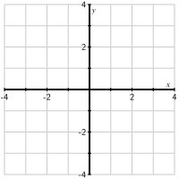

Section 7.1 Symmetric matrices and variance
In this section, we will revisit the theory of eigenvalues and eigenvectors for the special class of matrices that are symmetric, meaning that the matrix equals its transpose. This understanding of symmetric matrices will enable us to form singular value decompositions later in the chapter. We'll also begin studying variance in this section as it provides an important context that motivates some of our later work.
To begin, remember that if \(A\) is a square matrix, we say that \(\vvec\) is an eigenvector of \(A\) with associated eigenvalue \(\lambda\) if \(A\vvec=\lambda\vvec\text{.}\) In other words, for these special vectors, the operation of matrix multiplication simplifies to scalar multiplication.
Preview Activity 7.1.1.
This preview activity reminds us how a basis of eigenvectors can be used to relate a square matrix to a diagonal one.
-
Suppose that \(D=\begin{bmatrix} 3 \amp 0 \\ 0 \amp -1 \end{bmatrix}\) and that \(\evec_1 = \twovec10\) and \(\evec_2=\twovec01\text{.}\)
Sketch the vectors \(\evec_1\) and \(D\evec_1\) on the left side of Figure 7.1.1.
Sketch the vectors \(\evec_2\) and \(D\evec_2\) on the left side of Figure 7.1.1.
Sketch the vectors \(\evec_1+2\evec_2\) and \(D(\evec_1+2\evec_2)\) on the left side.
Give a geometric description of the matrix transformation defined by \(D\text{.}\)
-
Now suppose we have vectors \(\vvec_1=\twovec11\) and \(\vvec_2=\twovec{-1}1\) and that \(A\) is a \(2\times2\) matrix such that
\begin{equation*} A\vvec_1 = 3\vvec_1, \hspace{24pt} A\vvec_2 = -\vvec_2. \end{equation*}That is, \(\vvec_1\) and \(\vvec_2\) are eigenvectors of \(A\text{.}\)
Sketch the vectors \(\vvec_1\) and \(A\vvec_1\) on the right side of Figure 7.1.1.
Sketch the vectors \(\vvec_2\) and \(A\vvec_2\) on the right side of Figure 7.1.1.
Sketch the vectors \(\vvec_1+2\vvec_2\) and \(A(\vvec_1+2\vvec_2)\) on the right side.
Give a geometric description of the matrix transformation defined by \(A\text{.}\)
In what ways are the matrix transformations defined by \(D\) and \(A\) related to one another?
The preview activity asks us to compare the matrix transformations defined by two matrices, a diagonal matrix \(D\) and a matrix \(A\) whose eigenvectors are given to us. The transformation defined by \(D\) stretches horizontally by a factor of 3 and reflects in the horizontal axis, as shown in Figure 7.1.2

By contrast, the transformation defined by \(A\) stretches the plane by a factor of 3 in the direction of \(\vvec_1\) and reflects in the line defined by \(\vvec_1\text{,}\) as seen in Figure 4.3.1.

In this way, we see that the matrix transformations defined by these two matrices are equivalent after a \(45^\circ\) rotation. This notion of equivalence is what we called similarity in Section 4.3. There we considered a square \(m\times m\) matrix \(A\) that provided enough eigenvectors to form a basis of \(\real^m\text{.}\) For example, suppose we can construct a basis for \(\real^m\) using eigenvectors \(\vvec_1,\vvec_2,\ldots,\vvec_m\) having associated eigenvalues \(\lambda_1,\lambda_2,\ldots,\lambda_m\text{.}\) Forming the matrices,
enables us to write \(A = PDP^{-1}\text{.}\) This is what it means for \(A\) to be diagonalizable.
For the example in the preview activity, we are led to form
which tells us that \(A=PDP^{-1} = \begin{bmatrix} 1 \amp 2 \\ 2 \amp 1 \end{bmatrix} \text{.}\)
Notice that the matrix \(A\) has eigenvectors \(\vvec_1\) and \(\vvec_2\) that not only form a basis for \(\real^2\) but, in fact, form an orthogonal basis for \(\real^2\text{.}\) Given the prominent role played by orthogonal bases in the last chapter, we would like to understand what conditions on a matrix enable us to form an orthogonal basis of eigenvectors.
Subsection 7.1.1 Symmetric matrices and orthogonal diagonalization
Let's begin by looking at some examples in the next activity.
Activity 7.1.2.
Remember that the Sage command A.right_eigenmatrix() attempts to find a basis for \(\real^m\) consisting of eigenvectors of \(A\text{.}\) In particular, D, P =
A.right_eigenmatrix() provides a diagonal matrix \(D\) constructed from the eigenvalues of \(A\) with the columns of \(P\) containing the associated eigenvectors.
-
For each of the following matrices, determine whether there is a basis for \(\real^2\) consisting of eigenvectors of that matrix. When there is such a basis, form the matrices \(P\) and \(D\) and verify that the matrix equals \(PDP^{-1}\text{.}\)
\(\begin{bmatrix} 3 \amp -4 \\ 4 \amp 3 \end{bmatrix} \text{.}\)
\(\begin{bmatrix} 1 \amp 1 \\ -1 \amp 3 \end{bmatrix} \text{.}\)
\(\begin{bmatrix} 1 \amp 0\\ -1 \amp 2 \end{bmatrix} \text{.}\)
\(\begin{bmatrix} 9 \amp 2 \\ 2 \amp 6 \end{bmatrix} \text{.}\)
For which of these examples is it possible to form an orthogonal basis for \(\real^2\) consisting of eigenvectors?
For any such matrix \(A\text{,}\) find an orthonormal basis of eigenvectors and explain why \(A=QDQ^{-1}\) where \(Q\) is an orthogonal matrix.
Finally, explain why \(A=QDQ^T\) in this case.
When \(A=QDQ^T\text{,}\) what is the relationship between \(A\) and \(A^T\text{?}\)
The examples in this activity illustrate a range of possibilities. First, a matrix may have complex eigenvalues, in which case it will not be diagonalizable. Second, even if all the eigenvalues are real, there may not be a basis of eigenvalues if the dimension of one of the eigenspaces is less than the algebraic multiplicity of the associated eigenvalue.
We are interested in matrices for which there is an orthogonal basis of eigenvectors. When this happens, we can create an orthonormal basis of eigenvectors by scaling each eigenvector in the basis so that its length is 1. Putting these orthonormal vectors into a matrix \(Q\) produces an orthogonal matrix, which means that \(Q^T=Q^{-1}\text{.}\) We then have
In this case, we say that \(A\) is orthogonally diagonalizable.
Definition 7.1.4.
If there is an orthonormal basis of \(\real^n\) consisting of eigenvectors of the matrix \(A\text{,}\) we say that \(A\) is orthogonally diagonalizable. In particular, we can write \(A=QDQ^T\) where \(Q\) is an orthogonal matrix.
When \(A\) is orthogonally diagonalizable, notice that
That is, when \(A\) is orthogonally diagonalizable, \(A=A^T\) and we say that \(A\) is symmetric.
Definition 7.1.5.
A symmetric matrix \(A\) is one for which \(A=A^T\text{.}\)
Example 7.1.6.
Consider the matrix \(A = \begin{bmatrix} -2 \amp 36 \\ 36 \amp -23 \end{bmatrix} \text{,}\) which has eigenvectors \(\vvec_1 = \twovec43\text{,}\) with associated eigenvalue \(\lambda_1=25\text{,}\) and \(\vvec_2=\twovec{3}{-4}\text{,}\) with associated eigenvalue \(\lambda_2=-50\text{.}\) Notice that \(\vvec_1\) and \(\vvec_2\) are orthogonal so we can form an orthonormal basis of eigenvectors:
In this way, we construct the matrices
and note that \(A = QDQ^T\text{.}\)
Notice also that, as expected, \(A\) is symmetric; that is, \(A=A^T\text{.}\)
Example 7.1.7.
If \(A = \begin{bmatrix} 1 \amp 2 \\ 2 \amp 1 \\ \end{bmatrix} \text{,}\) then there is an orthogonal basis of eigenvectors \(\vvec_1 = \twovec11\) and \(\vvec_2 = \twovec{-1}1\) with eigenvalues \(\lambda_1=3\) and \(\lambda_2=-1\text{.}\) Using these eigenvectors, we form the orthogonal matrix \(Q\) consisting of eigenvectors and the diagonal matrix \(D\text{,}\) where
Then we have \(A = QDQ^T\text{.}\)
Notice that the matrix transformation represented by \(Q\) is a \(45^\circ\) rotation while that represented by \(Q^T=Q^{-1}\) is a \(-45^\circ\) rotation. Therefore, if we multiply a vector \(\xvec\) by \(A\text{,}\) we can decompose the multiplication as
That is, we first rotate \(\xvec\) by \(-45^\circ\text{,}\) then apply the diagonal matrix \(D\text{,}\) which stretches and reflects, and finally rotate by \(45^\circ\text{.}\) We may visualize this factorization as in Figure 7.1.8.

In fact, a similar picture holds any time the matrix \(A\) is orthogonally diagonalizable.
We have seen that a matrix that is orthogonally diagonalizable must be symmetric. In fact, it turns out that any symmetric matrix is orthogonally diagonalizable. We record this fact in the next theorem.
Theorem 7.1.9. The Spectral Theorem.
The matrix \(A\) is orthogonally diagonalizable if and only if \(A\) is symmetric.
Activity 7.1.3.
Each of the following matrices is symmetric so the Spectral Theorem tells us that each is orthogonally diagonalizable. The point of this activity is to find an orthogonal diagonalization for each matrix.
To begin, find a basis for each eigenspace. Use this basis to find an orthogonal basis for each eigenspace and put these bases together to find an orthogonal basis for \(\real^m\) consisting of eigenvectors. Use this basis to write an orthogonal diagonalization of the matrix.
\(\begin{bmatrix} 0 \amp 2 \\ 2 \amp 3 \end{bmatrix} \text{.}\)
\(\begin{bmatrix} 4 \amp -2 \amp 14 \\ -2 \amp 19 \amp -16 \\ -14 \amp -16 \amp 13 \end{bmatrix} \text{.}\)
\(\begin{bmatrix} 5 \amp 4 \amp 2 \\ 4 \amp 5 \amp 2 \\ 2 \amp 2 \amp 2 \end{bmatrix} \text{.}\)
Consider the matrix \(A = B^TB\) where \(B = \begin{bmatrix} 0 \amp 1 \amp 2 \\ 2 \amp 0 \amp 1 \end{bmatrix} \text{.}\) Explain how we know that \(A\) is symmetric and then find an orthogonal diagonalization of \(A\text{.}\)
As the examples in Activity 7.1.3 illustrate, the Spectral Theorem implies a number of things. Namely, if \(A\) is a symmetric \(m\times m\) matrix, then
the eigenvalues of \(A\) are real.
there is a basis of \(\real^m\) consisting of eigenvectors.
two eigenvectors that are associated to different eigenvalues are orthogonal.
We won't justify the first two facts here since that would take us rather far afield. However, it will be helpful to explain the third fact. To begin, notice the following:
This is a useful fact that we'll employ quite a bit in the future so let's summarize it in the following proposition.
Proposition 7.1.10.
For any matrix \(A\text{,}\) we have
In particular, if \(A\) is symmetric, then
Example 7.1.11.
Suppose that we have a symmetric matrix having eigenvectors \(\vvec_1\text{,}\) with associated eigenvalue \(\lambda_1=3\text{,}\) and \(\vvec_2\text{,}\) with associated eigenvalue \(\lambda_2 = 10\text{.}\) Notice that
Since \((A\vvec_1)\cdot\vvec_2 = \vvec_1\cdot(A\vvec_2)\) by Proposition 7.1.10, we have
which can only happen if \(\vvec_1\cdot\vvec_2 = 0\text{.}\) Therefore, \(\vvec_1\) and \(\vvec_2\) are orthogonal.
More generally, the same argument shows that two eigenvectors of a symmetric matrix associated to distinct eigenvalues are orthogonal.
Subsection 7.1.2 Variance
Many of the ideas we'll encounter in this chapter, such as orthogonal diagonalizations, can be applied to the study of data. In fact, it can be useful to understand these applications because they provide an important context in which mathematical ideas have a more concrete meaning and their motivation appears more clearly. For that reason, we will now introduce the statistical concept of variance as a way to gain insight into the significance of orthogonal diagonalizations.
Given a set of data points, their variance measures how spread out the points are. The next activity looks at some examples.
Activity 7.1.4.
We'll begin with a set of three data points
-
Find the centroid, or mean, \(\overline{\dvec} = \frac1N\sum_j \dvec_j\text{.}\) Then plot the data points and their centroid in Figure 7.1.12.
Figure 7.1.12. Plot the data points and their centroid here. -
Notice that the centroid lies in the center of the data so the spread of the data will be measured by how far away the points are from the centroid. To simplify our calculations, find the demeaned data points
\begin{equation*} \dtil_j = \dvec_j - \overline{\dvec} \end{equation*}and plot them in Figure 7.1.13.
Figure 7.1.13. Plot the demeaned data points \(\dtil_j\) here. -
Now that the data has been demeaned, we will define the total variance as the average of the squares of the distances from the origin; that is, the total variance is
\begin{equation*} V = \frac 1N\sum_j~|\dtil_j|^2. \end{equation*}Find the total variance \(V\) for our set of three points.
-
Now plot the projections of the demeaned data onto the \(x\) and \(y\) axes using Figure 7.1.14. Then find the variances \(V_x\) and \(V_y\) of the projected points.
Figure 7.1.14. Plot the projections of the deameaned data onto the \(x\) and \(y\) axes. Which of the variances, \(V_x\) and \(V_y\text{,}\) is larger and how does the plot of the projected points explain your response?
What do you notice about the relationship between \(V\text{,}\) \(V_x\text{,}\) and \(V_y\text{?}\) How does the Pythagorean theorem explain this relationship?
-
Plot the projections of the demeaned data points onto the lines defined by vectors \(\vvec_1=\twovec11\) and \(\vvec_2=\twovec{-1}1\) using Figure 7.1.15. Then find the variances \(V_{\vvec_1}\) and \(V_{\vvec_2}\) of these projected points.

Figure 7.1.15. Plot the projections of the deameaned data onto the lines defined by \(\vvec_1\) and \(\vvec_2\text{.}\) What is the relationship between the total variance \(V\) and \(V_{\vvec_1}\) and \(V_{\vvec_2}\text{?}\) How does the Pythagorean theorem explain your response?
Notice that variance enjoys an additivity property. Consider, for instance, the situation where our data points are two-dimensional and suppose that the demeaned points are \(\dtil_j=\twovec{\widetilde{x}_j}{\widetilde{y}_j}\text{.}\) We have
If we take the average over all data points, we find that the total variance \(V\) is the sum of the variances in the \(x\) and \(y\) directions:
More generally, suppose that we have an orthonormal basis \(\uvec_1\) and \(\uvec_2\text{.}\) If we project the demeaned points onto the line defined by \(\uvec_1\text{,}\) we obtain the points \((\dtil_j\cdot\uvec_1)\uvec_1\) so that
For each of our demeaned data points, the Projection Formula tells us that
We then have
since \(\uvec_1\cdot\uvec_2 = 0\text{.}\) When we average over all the data points, we find that the total variance \(V\) is the sum of the variances in the \(\uvec_1\) and \(\uvec_2\) directions. This leads to the following propositiion, in which this observation is expressed more generally.
Proposition 7.1.16. Additivity of Variance.
If \(W\) is a subspace with orthonormal basis \(\uvec_1,\uvec_2,\ldots, \uvec_n\text{,}\) then the variance of the points projected onto \(W\) is the sum of the variances in the \(\uvec_j\) directions:
The next activity demonstrates a more efficient way to find the variance \(V_{\uvec}\) in a particular direction and connects our discussion of variance with symmetric matrices.
Activity 7.1.5.
Let's return to the dataset from the previous activity in which we have demeaned data points:
Our goal is to compute the variance \(V_{\uvec}\) in the direction defined by a unit vector \(\uvec\text{.}\)
To begin, form the demeaned data matrix
and suppose that \(\uvec\) is a unit vector.
Write the vector \(A^T\uvec\) in terms of the dot products \(\dtil_j\cdot\uvec\text{.}\)
Explain why \(V_{\uvec} = \frac13|A^T\uvec|^2\text{.}\)
-
Apply Proposition 7.1.10 to explain why
\begin{equation*} V_{\uvec} = \frac13|A^T\uvec|^2 = \frac13 (A^T\uvec)\cdot(A^T\uvec) = \uvec^T\left(\frac13 AA^T\right)\uvec. \end{equation*} In general, the matrix \(C=\frac1N~AA^T\) is called the covariance matrix of the dataset, and it is useful because the variance \(V_{\uvec} = \uvec\cdot(C\uvec)\text{,}\) as we have just seen. Find the matrix \(C\) for our dataset with three points.
Use the covariance matrix to find the variance \(V_{\uvec_1}\) when \(\uvec_1=\twovec{1/\sqrt{5}}{2/\sqrt{5}}\text{.}\)
Use the covariance matrix to find the variance \(V_{\uvec_2}\) when \(\uvec_2=\twovec{-2/\sqrt{5}}{1/\sqrt{5}}\text{.}\) Since \(\uvec_1\) and \(\uvec_2\) are orthogonal, verify that the sum of \(V_{\uvec_1}\) and \(V_{\uvec_2}\) gives the total variance.
Explain why the covariance matrix \(C\) is a symmetric matrix.
This activity introduced the covariance matrix of a dataset, which is defined to be \(C=\frac1N~AA^T\) where \(A\) is the matrix of demeaned data points. Notice that
which tells us that \(C\) is symmetric. In particular, we know that it is orthogonally diagonalizable, an observation that will play an important role in the future.
This activity also demonstrates the significance of the covariance matrix, which is recorded in the following proposition.
Proposition 7.1.17.
If \(C\) is the covariance matrix associated to a demeaned dataset and \(\uvec\) is a unit vector, then the variance of the demeaned points projected onto the line defined by \(\uvec\) is
Our goal in the future will be to find directions \(\uvec\) where the variance is as large as possible and directions where it is as small as possible. The next activity demonstrates why this is useful.
Activity 7.1.6.
-
Evaluating the following Sage cell loads a dataset consisting of 100 demeaned data points and provides a plot of them. It also provides the demeaned data matrix \(A\text{.}\)
What are the dimensions of the covariance matrix \(C\text{?}\) Find \(C\) and verify your response.
By visually inspecting the data, determine which is larger, \(V_x\) or \(V_y\text{.}\) Then compute both of these quantities to verify your response.
What is the total variance \(V\text{?}\)
In approximately what direction is the variance greatest? Choose a reasonable vector \(\uvec\) that points in approximately that direction and find \(V_{\uvec}\text{.}\)
In approximately what direction is the variance smallest? Choose a reasonable vector \(\wvec\) that points in approximately that direction and find \(V_{\wvec}\text{.}\)
How are the directions \(\uvec\) and \(\wvec\) in the last two parts of this problem related to one another? Why does this relationship hold?
This activity illustrates how variance can identify a line along which the data is concentrated. When the data primarily lies along a line defined by a vector \(\uvec_1\text{,}\) then the variance in that direction will be large while the variance in an orthogonal direction \(\uvec_2\) will be small.
Remember that variance is additive, according to Proposition 7.1.16, so that if \(\uvec_1\) and \(\uvec_2\) are orthogonal unit vectors, then the total variance is
Therefore, if we choose \(\uvec_1\) to be the direction where \(V_{\uvec_1}\) is a maximum, then \(V_{\uvec_2}\) will be a minimum.
In the next section, we will use an orthogonal diagonalization of the covariance matrix \(C\) to find the directions having the greatest and smallest variances. In this way, we will be able to determine when data is concentrated along a line or subspace.
Subsection 7.1.3 Summary
This section explored both symmetric matrices and variance. In particular, we saw that
A matrix \(A\) is orthogonally diagonalizable if there is an orthonormal basis of eigenvectors. In particular, we can write \(A=QDQ^T\text{,}\) where \(D\) is a diagonal matrix of eigenvalues and \(Q\) is an orthogonal matrix of eigenvectors.
The Spectral Theorem tells us that a matrix \(A\) is orthogonally diagonalizable if and only if it is symmetric; that is, \(A=A^T\text{.}\)
The variance of a dataset can be computed using the covariance matrix \(C=\frac1N~AA^T\text{,}\) where \(A\) is the matrix of demeaned data points. In particular, the variance of the demeaned data points projected onto the line defined by the unit vector \(\uvec\) is \(V_{\uvec} = \uvec\cdot C\uvec\text{.}\)
-
Variance is additive so that if \(W\) is a subspace with orthonormal basis \(\uvec_1, \uvec_2,\ldots,\uvec_n\text{,}\) then
\begin{equation*} V_W = V_{\uvec_1} + V_{\uvec_2} + \ldots + V_{\uvec_n}. \end{equation*}
Exercises 7.1.4 Exercises
1.
For each of the following matrices, find the eigenvalues and a basis for each eigenspace. Determine whether the matrix is diagonalizable and, if so, find a diagonalization. Determine whether the matrix is orthogonally diagonalizable and, if so, find an orthogonal diagonalization.
\(\begin{bmatrix} 5 \amp 1 \\ -1 \amp 3 \\ \end{bmatrix} \text{.}\)
\(\displaystyle \begin{bmatrix} 0 \amp 1 \\ 1 \amp 0 \\ \end{bmatrix}\)
\(\displaystyle \begin{bmatrix} 1 \amp 0 \amp 0 \\ 2 \amp -2 \amp 0 \\ 0 \amp 1 \amp 4 \\ \end{bmatrix}\)
\(\displaystyle \begin{bmatrix} 2 \amp 5 \amp -4\\ 5 \amp -7 \amp 5 \\ -4 \amp 5 \amp 2 \\ \end{bmatrix}\)
2.
Consider the matrix \(A = \begin{bmatrix} 1 \amp 2 \amp 2 \\ 2 \amp 1 \amp 2 \\ 2 \amp 2 \amp 1 \\ \end{bmatrix}\) The eigenvalues of \(A\) are \(\lambda_1=5\text{,}\) \(\lambda_2=-1\text{,}\) and \(\lambda_3 = -1\text{.}\)
Explain why \(A\) is orthogonally diagonalizable.
Find an orthonormal basis for the eigenspace \(E_5\text{.}\)
Find a basis for the eigenspace \(E_{-1}\text{.}\)
Now find an orthonormal basis for \(E_{-1}\text{.}\)
Find matrices \(D\) and \(Q\) such that \(A=QDQ^T\text{.}\)
3.
Find an orthogonal diagonalization, if one exists, for the following matrices.
\(\begin{bmatrix} 11 \amp 4 \amp 12 \\ 4 \amp -3 \amp -16 \\ 12 \amp -16 \amp 1 \end{bmatrix} \text{.}\)
\(\begin{bmatrix} 1 \amp 0 \amp 2 \\ 0 \amp 1 \amp 2 \\ -2 \amp -2 \amp 1 \\ \end{bmatrix} \text{.}\)
\(\begin{bmatrix} 9 \amp 3 \amp 3 \amp 3\\ 3 \amp 9 \amp 3 \amp 3\\ 3 \amp 3 \amp 9 \amp 3\\ 3 \amp 3 \amp 3 \amp 9\\ \end{bmatrix} \text{.}\)
4.
Suppose that \(A\) is an \(m\times n\) matrix and that \(B=A^TA\text{.}\)
Explain why \(B\) is orthogonally diagonalizable.
Explain why \(\vvec\cdot(B\vvec) = \len{A\vvec}^2\text{.}\)
Suppose that \(\uvec\) is an eigenvector of \(B\) with associated eigenvalue \(\lambda\) and that \(\uvec\) has unit length. Explain why \(\lambda = \len{A\uvec}^2\text{.}\)
Explain why the eigenvalues of \(B\) are nonnegative.
If \(C\) is the covariance matrix associated to a demeaned data set, explain why the eigenvalues of \(C\) are nonnegative.
5.
Suppose that you have the data points
Find the demeaned data points.
Find the total variance \(V\) of the data set.
Find the variance in the direction \(\evec_1 = \twovec10\) and the variance in the direction \(\evec_2=\twovec01\text{.}\)
Project the demeaned data points onto the line defined by \(\vvec_1=\twovec21\) and find the variance of these projected points.
Project the demeaned data points onto the line defined by \(\vvec_2=\twovec1{-2}\) and find the variance of these projected points.
How and why are the results of from the last two parts related to the total variance?
6.
Suppose you have six 2-dimensional data points arranged in the matrix
Find the matrix \(A\) of demeaned data points and plot the points in Figure 7.1.18.
Figure 7.1.18. A plot for the demeaned data points. Construct the covariance matrix \(C\) and explain why you know that it is orthogonally diagonalizable.
Find an orthogonal diagonalization of \(C\text{.}\)
Sketch the lines corresponding to the two eigenvectors on the plot above.
Find the variances in the directions of the eigenvectors.
7.
Suppose that \(C\) is the covariance matrix of a demeaned data set.
Suppose that \(\uvec\) is an eigenvector of \(C\) with associated eigenvalue \(\lambda\) and that \(\uvec\) has unit length. Explain why \(V_{\uvec} = \lambda\text{.}\)
-
Suppose that the covariance matrix of a demeaned data set can be written as \(C=QDQ^T\) where
\begin{equation*} Q = \begin{bmatrix} \uvec_1 \amp \uvec_2 \end{bmatrix}, \hspace{24pt} D = \begin{bmatrix} 10 \amp 0 \\ 0 \amp 0 \\ \end{bmatrix}. \end{equation*}What is \(V_{\uvec_2}\text{?}\) What does this tell you about the demeaned data?
Explain why the total variance of a data set equals the sum of the eigenvalues of the covariance matrix.
8.
Determine whether the following statements are true or false and explain your thinking.
If \(A\) is an invertible, orthogonally diagonalizable matrix, then so is \(A^{-1}\text{.}\)
If \(\lambda=2+i\) is an eigenvalue of \(A\text{,}\) then \(A\) cannot be orthogonally diagonalizable.
If there is a basis for \(\real^m\) consisting of eigenvectors of \(A\text{,}\) then \(A\) is orthogonally diagonalizable.
If \(\uvec\) and \(\vvec\) are eigenvectors of a symmetric matrix associated to eigenvalues -2 and 3, then \(\uvec\cdot\vvec=0\text{.}\)
If \(A\) is a square matrix, then \(\uvec\cdot(A\vvec) = (A\uvec)\cdot\vvec\text{.}\)
9.
Suppose that \(A\) is a noninvertible, symmetric \(3\times3\) matrix having eigenvectors
and associated eigenvalues \(\lambda_1 = 20\) and \(\lambda_2 = -4\text{.}\) Find matrices \(Q\) and \(D\) such that \(A = QDQ^T\text{.}\)
10.
Suppose that \(W\) is a plane in \(\real^3\) and that \(P\) is the \(3\times3\) matrix that projects vectors orthogonally onto \(W\text{.}\)
Explain why \(P\) is orthogonally diagonalizable.
What are the eigenvalues of \(P\text{?}\)
Explain the relationship between the eigenvectors of \(P\) and the plane \(W\text{.}\)